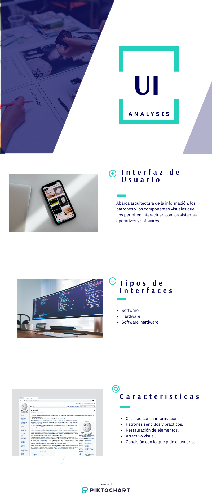

Sitio web como herramienta de aprendizaje de los temas
Interfaz de Usuario e Interacción Humano-Ordenador
Interacción Humano-Ordenador

Referencias:
PinguinoDigital. (2020). Obtenido de https://pinguinodigital.com/blog/interfaz-de-usuario/
E.Narcizo, F. (2001). Departamento de computación GIDyC. Obtenido de http://www.saber.ula.ve/bitstream/handle/123456789/16835/flor_narciso.